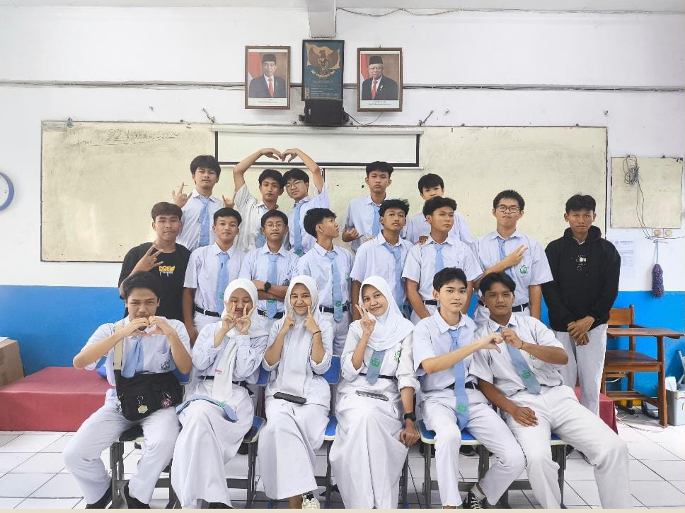
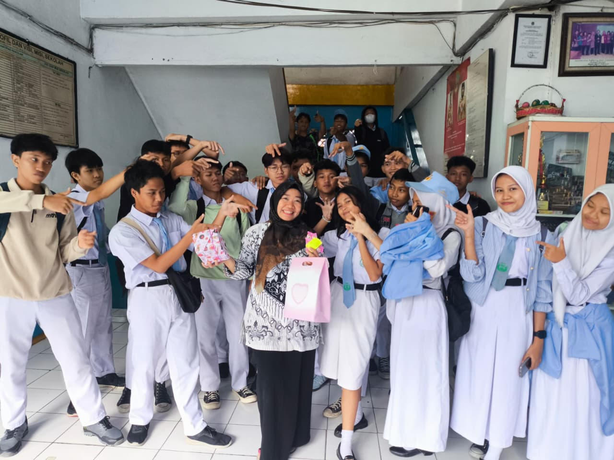
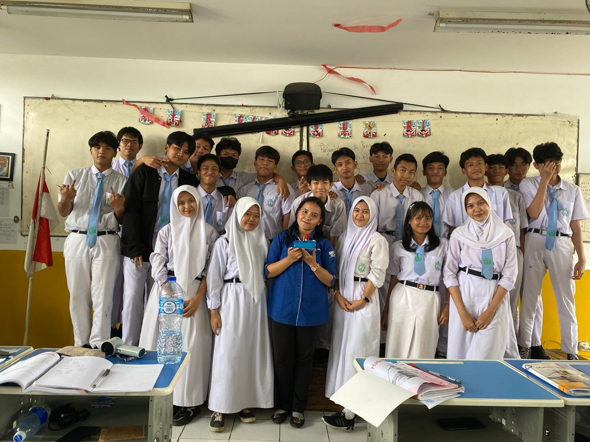
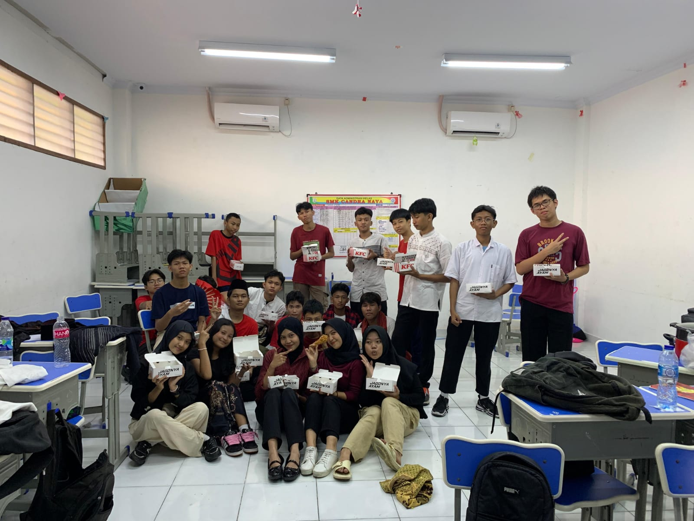
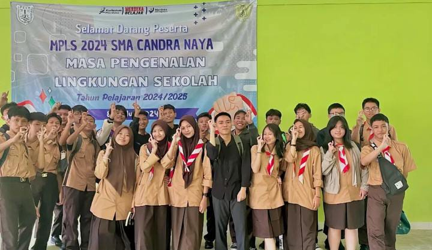

ini adalah tempat dimana kita berbagi canda dan tawa:v blm finish ini wok

Membuat video Hari Guru

Hari Guru bersama Bu Uswah

Ulang tahun Bu Erlita

Makan KFC abis event P5

MPLS Pertama XII-B
Daftar siswa kelas XII BSMK.
Cek giliran piket kelas.